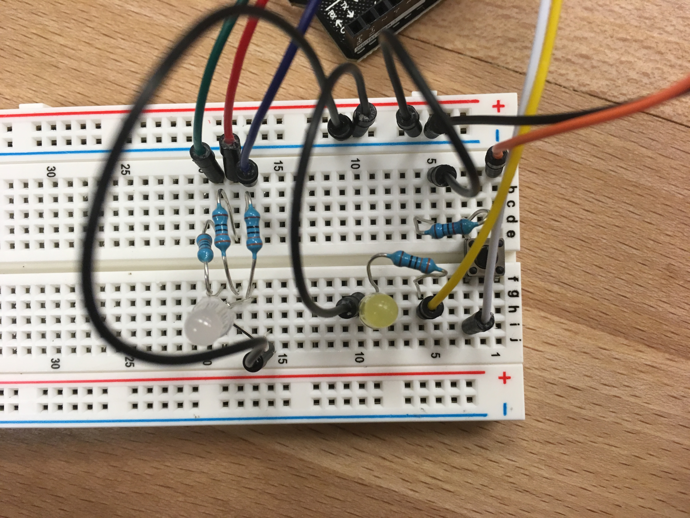
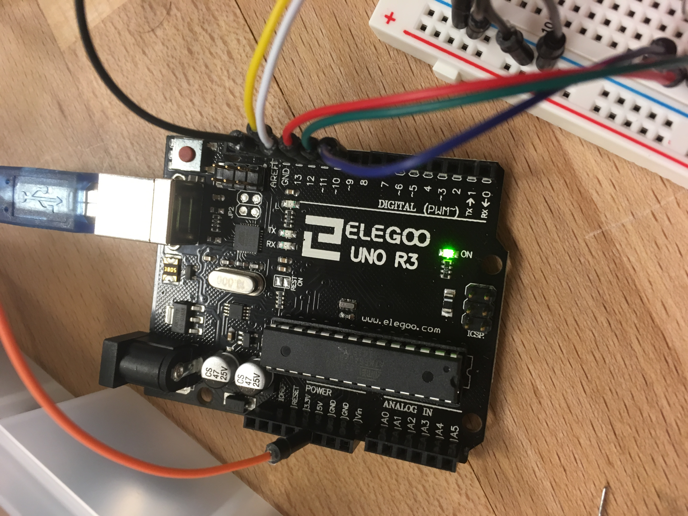
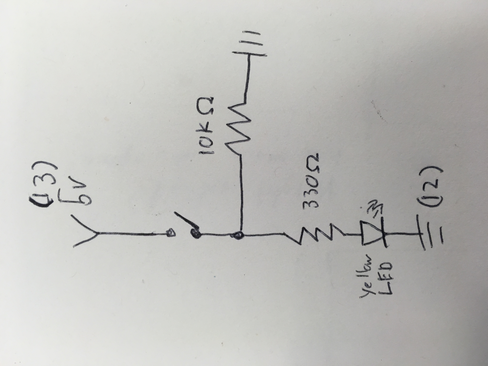
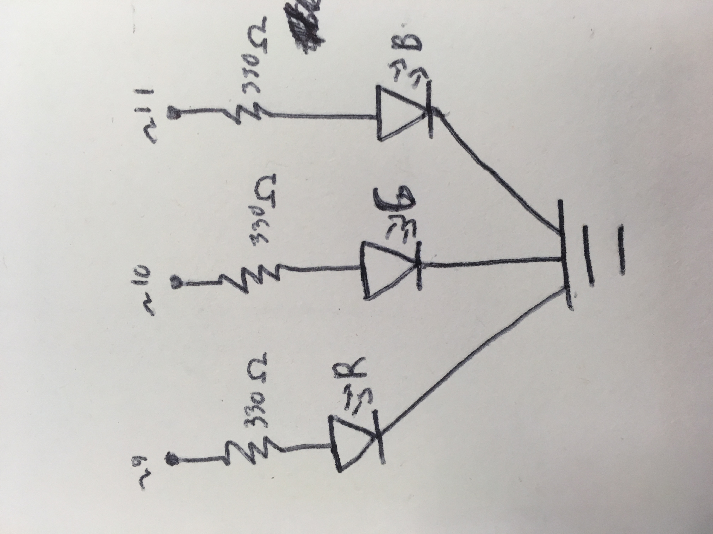
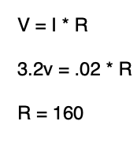

Tre's Assignment 1! Fading Lights (and a button!)

To learn more about Arduino, I made two circuits: One that used a button to turn on an LED and another that used an RGB LED to fade between colors.
Circuitry and Schematics
 Here is what my breadboard and Arduino looked like at the end of my project.
To utilize a button in my circuit, I connected the power source (pin 13) to a switch (the button), which branched out two ways: one to a big resistor and to ground and another to a much smaller resistor and an LED, which end on pin 12. In the code, pin 12 acts as the pushbutton pin and notifies the code if the button is being pressed, which causes the circuit to turn the LED on.
I used the RGB type LED to have each color fade and cycle, which gives a nice calming light view. Each RGB LED is connected to a different analog pin (9, 10, and 11), and the code tells each pin to turn on, fade, then turn off. This cycles through every LED and then repeats.
Using Ohm's Law, I calculated the amount of resistance I would need for each circuit I would run. Any LED or power would be ok to use as long as I had a resistor of at least 160 ohms, so I used 330 ohm resistors throughout the project, except for one current-limiting resistor in the button, which I had a 10k ohm resistor.
Code and Final Operation
The code for this project controls both the button LED and the fading RGB LED simultaneously. To do this, the state of the button is checked at multiple different points throughout the code.
// Button Press and RGB Fade
// This short program controls to circuits simultaneously: one which uses a button to control and LED and another that uses an RGB LED to fade between multiple colors
//Yellow Button
const int buttonPin = 12; // the number of the pushbutton pin
const int ledPin = 13; // the number of the LED pin
// RGB Fade
const int greenPin = 11; // Green LED Pin
const int bluePin = 10; // Blue LED Pin
const int redPin = 9; // Red LED Pin
int start = 9; // Pin to start the main for-loop on
int brightness = 0; // how bright the LED is
int buttonState = 0; // variable for reading the pushbutton status
void setup()
{
// initialize the LED pin as an output:
pinMode(ledPin, OUTPUT);
// initialize the pushbutton pin as an input:
pinMode(buttonPin, INPUT);
pinMode(bluePin, OUTPUT); // initialize the blue pin
pinMode(greenPin, OUTPUT); // initialize the green pin
pinMode(redPin, OUTPUT); // initialize the red pin
}
void loop()
{
for (int thisPin = start; thisPin < 12; thisPin++) // Cycles through each pin (9,10,11)
{
buttonPress(buttonPin, ledPin); // Check button
for (int currentBrightness = brightness; currentBrightness <= 255; currentBrightness += 5) // fade in current LED
{
buttonPress(buttonPin, ledPin); // Check button
analogWrite(thisPin, currentBrightness); // sets the current brightness
delay(30); // waits for 30 milli seconds to see the dimming effect
}
for (int currentBrightness = 255; currentBrightness >= 0; currentBrightness -= 5) // fade out current LED
{
buttonPress(buttonPin, ledPin); // Check button
analogWrite(thisPin, currentBrightness); // sets the current brightness
delay(30); // waits for 30 milli seconds to see the dimming effect
}
}
}
void buttonPress(buttonPin, ledPin)
{
buttonState = digitalRead(buttonPin); // check if buttons pressed
if (buttonState == HIGH)
{
// turn LED on:
digitalWrite(ledPin, HIGH);
}
else
{
// turn LED off:
digitalWrite(ledPin, LOW);
}
}
Here is the result, a calming color display with a more stressful yellow alert button.